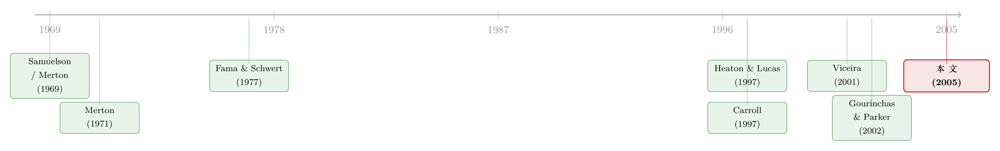

年纪越大，越该把钱从股票里挪出来吗？——一个生命周期模型给出的答案
本文读的是 Cocco, Gomes & Maenhout (2005, Review of Financial Studies)：在一个用 PSID 真实校准、含不可交易劳动收入与借贷约束的生命周期模型里，劳动收入本身就是一笔「隐性的无风险资产」，它随年龄逐渐耗尽，于是最优的股票仓位大致随年龄递减——这正好为「年纪越大越该买债、少买股」的民间理财忠告找到了经济学根据。而忽略劳动收入会带来高达年消费 2% 的效用损失，但若只忽略它的「风险」而非「水平」，损失要小一个数量级——除非你把一次「灾难性」的收入暴跌也算进去。
1 引言：一句人人都听过的理财忠告
几乎每一本通俗理财书都会告诉你同一件事：年轻时多买股票，年老时把钱挪到国债、定存这类「安全」资产上。Malkiel 那本卖了几十年的《A Random Walk Down Wall Street》就是这么写的，理财顾问也大都这么劝。这条建议听上去如此天经地义，以至于很少有人追问一句：它的经济学理由到底是什么？
偏偏，这条直觉在理论上是站不住脚的。早在 Samuelson（1969）那篇开创性的文章里，所谓「商人的风险」（businessman's risk）——即「持有风险股票只适合年轻商人，不适合寡妇」——就被拿出来检验，然后被否定了。在收益率独立同分布、市场无摩擦、且没有劳动收入的世界里，最优的股票仓位是一个与年龄、与财富都无关的常数。换句话说，标准理论说：不管你二十岁还是七十岁，都该把同样比例的钱投进股市。
于是张力就出现了：理论说「比例不变」，常识却说「越老越保守」。谁错了？
这篇文章的回答是：两者都没错，只是 Samuelson 的世界里少了一样最关键的东西——劳动收入（labor income）。一旦把它请回模型，并且诚实地承认它既不能被资本化、其风险也无法买保险对冲，那条「越老越保守」的曲线就会自然地长出来。
2 核心直觉：劳动收入是一笔「藏起来」的无风险资产
要理解全文，只需抓住一个核心比喻，作者把它讲得很透：一份劳动收入流，等价于持有一笔资产。
想象一个刚工作的年轻人。他金融账户里可能没几个钱，但他未来还有四十年的工资要领。如果这份工资足够稳定（风险小、与股市相关性低），那它就像一笔巨大的、隐性的类无风险资产躺在他的资产负债表上。既然「无风险的部分」已经被工资占满了，他在金融账户里就应当大胆地、几乎满仓地去配股票，以此平衡整体的风险敞口。
接着，一个自然的问题是：这笔隐性资产会怎么随时间变化？答案是——它会被慢慢「领光」。人越老，剩下的未来工资越少，这笔隐性无风险资产就越枯竭。为了维持整体组合中「安全」与「风险」的平衡，他必须在金融账户里显性地买回越来越多的无风险资产。于是，金融组合中的股票比例随年龄下降。
这就是全文的灵魂：不是因为老人「天生」更怕风险，而是因为支撑他冒险的那笔隐性资本，正随着他逼近退休而蒸发。 这一思路确认了 Heaton & Lucas（1997）在无限期模型里的结论，也顺着 Jagannathan & Kocherlakota（1996）那篇说理性极强的小文章的直觉往下走。
这条逻辑还有一个推论：劳动收入风险越大，工资就越不像「无风险资产」，越像「股票」。于是工资风险会挤出（crowd out）金融账户里的股票仓位——背景风险（background risk）越高，人就越不敢在能选择的地方再冒险。这把 Pratt-Zeckhauser（1987）、Kimball（1993）那套静态的背景风险理论，搬进了生命周期的动态场景。
3 模型设定：一步步把世界搭起来
这是一篇结构清晰的模型论文，值得把骨架一节一节摆出来。
3.1 偏好与生命表
投资者最多活 \(T\) 期，前 \(K\) 期工作（基准里 \(K\) 对应退休年龄 65），之后退休，到 100 岁必然死亡。每一期能否活到下一期是随机的：令 \(p_t\) 为「在 \(t\) 期活着、且能活到 \(t+1\) 期」的条件存活概率，用美国国家卫生统计中心的生命表来校准。偏好是时间可加的幂效用，并允许遗赠动机：
$$E_1\left[\sum_{t=1}^{T}\delta^{t-1}\left(\prod_{j=0}^{t-2}p_j\right)\left(p_{t-1}\,\frac{C_{it}^{1-\gamma}}{1-\gamma} + b\,(1-p_{t-1})\,\frac{D_{it}^{1-\gamma}}{1-\gamma}\right)\right]$$
其中 \(\delta<1\) 是贴现因子，\(C_{it}\) 是消费，\(\gamma>0\) 是相对风险厌恶系数，\(D_{it}\) 是死时留下的遗产，\(b\) 控制遗赠动机的强度（基准里设 \(b=0\)）。
3.2 劳动收入过程：一个会「驼峰」的随机游走
这是全文校准的重头戏。退休前，投资者 \(i\) 在 \(t\) 期的对数劳动收入是：
$$\log(Y_{it}) = f(t, Z_{it}) + v_{it} + \varepsilon_{it}, \quad t\le K$$
这里 \(f(t,Z_{it})\) 是年龄和个体特征 \(Z_{it}\) 的确定性函数——它负责刻画工资随生命周期先升后降的「驼峰」形状；\(\varepsilon_{it}\sim N(0,\sigma_\varepsilon^2)\) 是暂时性冲击；而 \(v_{it}\) 是持久性成分，被设为一个随机游走：
$$v_{it} = v_{i,t-1} + u_{it}$$
随机游走这一设定跟着 Carroll（1997）与 Gourinchas & Parker（2002）；Hubbard, Skinner & Zeldes（1995）估出的一阶自回归系数也确实非常接近 1。更精细的一步在于，作者把持久性冲击 \(u_{it}\) 拆成一个总量（aggregate）成分 \(\xi_t\) 和一个个体特质（idiosyncratic）成分 \(\omega_{it}\)：
$$u_{it} = \xi_t + \omega_{it}$$
为什么要拆？因为只有总量成分 \(\xi_t\) 才可能和股市相关——个体被裁员的运气不会和大盘相关，但整个经济的工资增长会。这个 \(\xi_t\) 跟随机游走的总量劳动收入这一设定，正是 Fama & Schwert（1977）、Jagannathan & Wang（1996）在金融文献里用过的。股票超额收益的创新项 \(\eta_{t+1}\) 与 \(\xi_t\) 的相关系数记为 \(\rho\)——这是后文一切讨论的关键参数。
退休收入则被简化为「最后工作年持久收入的固定比例 \(\lambda\)」：
$$\log(Y_{it}) = \log(\lambda) + f(K, Z_{iK}) + v_{iK}, \quad t>K$$
这个偷懒的设定其实很聪明：它让退休后不必再引入新的状态变量，大大降低了数值求解的维数。
3.3 两种资产与那道关键的约束
投资者能投两种资产。无风险资产（国债）有固定毛实际收益 \(\bar{R}_f\)；风险资产（股票）的超额收益为：
$$R_{t+1} - \bar{R}_f = \mu + \eta_{t+1}, \quad \eta_{t+1}\sim N(0,\sigma_\eta^2)$$
而真正让模型「有牙齿」的，是这两条约束：
$$B_{it}\ge 0, \qquad S_{it}\ge 0$$
第一条是借贷约束（borrowing constraint）：国债持有量不能为负，即你不能借钱、不能把未来工资资本化提前花掉。第二条是卖空约束（short-sale constraint）：股票仓位不能为负。两条合起来意味着股票占比 \(\alpha_{it}\in[0,1]\)，且财富恒非负。作者强调，这正是市场不完全（market incompleteness）的体现——道德风险让多数人无法靠未来工资借钱，劳动收入风险也几乎买不到保险。正是这种不完全，让 Merton（1971）那套完全市场下的优雅解失效，逼着我们去数值求解。
3.4 贝尔曼方程：全文的引擎
令 \(X_{it}=W_{it}+Y_{it}\) 为「手头现金」（cash-on-hand，跟随 Deaton 1991 的记法）。投资者每期决定消费 \(C_{it}\) 和股票占比 \(\alpha_{it}\)，下一期财富为 \(W_{i,t+1}=R^p_{i,t+1}(W_{it}+Y_{it}-C_{it})\)，其中组合收益 \(R^p_{i,t+1}\equiv\alpha_{it}R_{t+1}+(1-\alpha_{it})\bar{R}_f\)。整个问题浓缩成一条贝尔曼方程，下面把它逐块标注出来：
这个问题没有解析解。作者用逆向归纳（backward induction）求解：最后一期的策略是平凡的（把所有钱花光），把这一期的值函数代回贝尔曼方程算出前一期的策略，如此一路倒推到 \(t=1\)。这里还用到一个漂亮的简化——值函数对当期持久收入是齐次的，于是可以把 \(v_{it}\) 归一化为 1，把状态空间降一维。
4 完全市场基准：那条「水平线」从哪来
要看清这篇文章的贡献，先得知道它在和什么较劲。在完全市场、且忽略劳动收入的世界里，幂效用投资者面对常数投资机会集时，Samuelson（1969）和 Merton（1969）给出的最优股票占比是：
$$\alpha = \frac{\mu}{\gamma\,\sigma_\eta^2}$$
注意右边：只有股票超额收益的均值 \(\mu\)、方差 \(\sigma_\eta^2\) 和风险厌恶 \(\gamma\)，没有年龄，也没有财富。这就是那条贯穿一生的「水平线」。本文的全部工作，可以理解为：把劳动收入和借贷约束加进去，看这条水平线如何被掰弯成一条随年龄下行的曲线。
5 校准与主要结果
5.1 数据与参数
劳动收入过程用 PSID（Panel Study of Income Dynamics）估计——这是美国最大的纵向收入面板。作者对「劳动收入」取了一个很宽的定义：除工资外，还包含失业补偿、工伤补偿、社保、各类福利与（主要来自亲属的）转移支付，覆盖户主及其配偶——这样做是为了把自我保险的渠道也隐含进去。样本按教育分三组（无高中、高中、大学），分别估计带固定效应的年龄轮廓。三组的样本量分别约为 1,104、2,816、1,110 个家庭。
误差结构则沿用 Carroll & Samwick（1997）的方差分解法估出。一个关键数字：永久与暂时收入冲击和股票收益的相关系数 \(\rho\)，三组分别为 −0.0143、0.0058、−0.0175，t 值都很小（如 −0.217、0.143、−0.540）——统计上与零无异。 这个「微弱为正、实则约等于零」的相关性，是后文结论成立的前提。
其余基准参数：退休年龄 65、贴现因子 \(\delta=`0.96`\)、风险厌恶 \(\gamma=`10`\)（Mehra-Prescott 1985 认为合理的上限）、股权溢价 \(\mu=`4\%`\)、无风险利率 2\%、股票收益标准差 0.157。作者坦言，之所以敢搭配这么高的风险厌恶和这么保守的股权溢价，正是因为劳动收入的存在会大幅推高股票需求——否则模型会预测人人满仓股票，与数据不符。
5.2 策略函数：曲线是怎样被掰弯的
先看退休阶段。在生命的最后几年，「劳动收入」被建模成恒定且确定的退休金。此时最优股票占比是随财富递减的：退休金是一笔确定的无风险资产，钱少的人手里这笔隐性无风险资产相对更大，于是会把金融账户更激进地压向股票；钱越多，退休金越不值一提，股票占比就趋近完全市场解 \(\mu/(\gamma\sigma_\eta^2)\) 那条水平线。
把这套逻辑沿生命周期展开，主结论就出来了：年轻人金融财富少、未来工资多（隐性无风险资产巨大），所以几乎满仓股票；随着年龄增长，这笔隐性资产被领光，金融账户里的股票占比一路走低。 这就为开篇那条民间忠告补上了它一直缺的经济学骨架。
5.3 三个量化的「钉子」
文章最有分量的，是把「劳动收入到底多重要」用效用成本量化出来。作者计算了几种次优策略相对最优策略的效用损失（以消费等价单位计）：
- 完全忽略劳动收入（像完全市场无收入世界那样，投一个恒定比例）：损失高达年消费的
2%。这说明把人力资本纳入投资决策，价值巨大。 - 只忽略劳动收入的「风险」、但不忽略其「水平」：损失要小一个数量级。也就是说，知道自己有工资很重要，但精确刻画工资的波动性，重要性低得多。
- 但是——真正的反转在这里——一旦允许一个经过实证校准的、小概率的「灾难性」劳动收入暴跌（比如长期失业、收入近乎归零），忽略风险的代价就会陡然放大，尤其对年轻家庭。这一项「灾难性冲击」对年轻人股票需求的挤出效应极强，是模型能匹配数据中「年轻人股票参与度偏低」的关键。
5.4 内生借贷约束的延伸
文章还把外生的「借贷不能为负」换成内生借贷约束——给违约设一个实证校准的惩罚。结论是：决定一个人能借多少、能配多少股票的关键，是收入分布的下界，也就是社会保险把工资托到离零多远。如果收入过程有一个被托住的下界，投资者面对一个正的内生借贷上限，于是年轻时持有负财富、且完全不碰股票。
这里有一个容易被误读的地方：模型预测的「股票占比随年龄递减」，是针对金融账户内部的比例。如果把人力资本也算进总财富，年轻人「总资产中的股票占比」其实可能很低——因为分母里那笔巨大的隐性无风险资产。两种口径不要混淆。
6 文献脉络
这条研究的演进，可以串成一条很清楚的线。
起点是 Samuelson（1969）和 Merton（1969, 1971）：他们在完全市场、无劳动收入的框架下，给出了那条「与年龄无关的水平线」，并明确否定了「年龄应当影响配置」的直觉。问题也由此埋下——理论与常识相悖。
第一次转向来自把劳动收入和市场不完全请进来的人。Fama & Schwert（1977）研究人力资本与资本市场均衡；Heaton & Lucas（1997）在无限期模型里发现劳动收入是无风险资产的替代品；Jagannathan & Kocherlakota（1996）则把这背后的直觉讲得通俗透彻。与此并行的，是消费侧的「缓冲存量储蓄」（buffer-stock saving）文献——Deaton（1991）、Carroll（1997）、Gourinchas & Parker（2002）——它们给出了校准劳动收入过程的工具箱。

但无限期模型的局限在于其平稳性：它天然不适合刻画「生命周期」这种非平稳现象。本文一个核心发现恰恰是，决定配置的关键变量是「累积财富 / 预期未来劳动收入」之比，而这个比值在生命周期里显然不是平稳的。Viceira（2001）用「恒定的零收入概率」来近似退休，已经往前迈了一步。本文所处的位置，就是把这条线推到一个用 PSID 真实校准、含借贷约束、能算出效用成本的有限期生命周期模型——它既是理论的落地，也是后续家庭金融实证的基准。
沿着这条线往后，可以接上不少本博客讨论过的工作：当把「习惯形成」请进同一个生命周期框架，年轻人不敢买股票会有另一重解释（参见《年轻人为什么不敢买股票？》）；而如果觉得本文的高斯收入过程太「干净」，把收入风险更丑陋的一面还回去，又会改写对风险厌恶的估计（参见《把收入风险的「丑陋一面」还给模型》）。求解这类「天书」般动态组合问题的数值技巧本身，也是一条独立的研究线（参见《把「天书」一样的动态组合，交给一台会做回归的模拟器》）。
7 评论与延伸（Q&A + 研究方向）
(a) 几个可能的疑问
Q：这篇文章和 Merton（1971）的连续时间解，本质区别在哪？
Merton 的优雅来自完全市场——劳动收入可被资本化、其风险可被保险，于是问题有解析解。本文的全部张力在于拿掉这两个假设：借贷约束让你不能把未来工资变现，市场不完全让你无法对冲工资风险。一旦如此，解析解消失，必须数值逆向归纳，而「年龄效应」也正是从这种不完全里长出来的。
Q：「股票占比随年龄递减」到底是怎么来的，是因为老人更怕风险吗？
不是。模型里风险厌恶 \(\gamma\) 是常数，从不随年龄变。下行曲线纯粹来自「人力资本」这笔隐性无风险资产的耗竭：年轻时它巨大，支撑你在金融账户满仓股票；年老时它枯竭，你只能在金融账户里显性地补回无风险资产。机制是资产负债表的再平衡，不是偏好的改变。
Q：那个「统计上约等于零」的工资—股市相关系数 \(\rho\)，对结论有多关键？
相当关键。正因为 \(\rho\approx 0\)，劳动收入才更像「无风险资产」而非「股票」，从而推高（而非挤出）股票需求。如果 \(\rho\) 显著为正（比如自营业主、创业者的收入，见 Heaton & Lucas 2000a 的论点），工资就更像股票，挤出效应会强得多，结论会被削弱。
Q：既然劳动收入这么重要，为什么「忽略其风险」的代价反而小一个数量级？
因为对大多数人，工资的水平（你有没有一份稳定收入）比它的二阶矩（这份收入波动多大）重要得多。知道自己未来有工资，就已经能正确地把金融账户压向股票了；至于工资到底波动 10% 还是 15%，对最优配置的边际影响有限——除非尾部出现灾难性暴跌，那时风险的形状才突然变得要命。
Q：模型预测年轻人「几乎满仓股票」，可现实里年轻人股票参与度很低，这不是打脸吗？
这正是作者引入「灾难性劳动收入冲击」的动机。基准模型确实会高估年轻人的股票仓位；加入一个小概率、收入近乎归零的灾难，会强力挤出年轻人的股票需求，让模型预测向数据靠拢。当然，这仍不能完全解释「零参与」——那还需要参与成本等机制（参见《「不买股票」也能是理性的吗？》）。
Q：退休收入被设成「最后工作年的固定比例」，这个简化会不会太粗暴？
它确实粗暴，但是有目的的粗暴：这样设定让退休后不必引入新状态变量，数值求解可行。作者在延伸里也放松了它，允许退休收入有不确定性，主结论稳健。代价是模型对退休临界点附近的配置动态刻画得偏理想化。
(b) 几个可能的研究问题与提案
1. 把「劳动收入即隐性资产」的逻辑搬到公司债持有人结构上。
【经济故事】本文的核心是「某种隐性的无风险头寸会挤出显性的风险配置」。在公司债市场，保险公司、养老金这类长久期负债持有人，其负债本身就是一笔「隐性空头无风险资产」，这会如何塑造他们对信用风险的需求？年龄结构（负债久期）是否预测了机构的信用债配置曲线？ 【可行性】中。需要 NAIC / eMAXX 持仓数据加机构负债结构，识别上可借助监管资本规则的外生变动做准自然实验。难点是负债端数据的颗粒度。
2. 用「灾难性收入冲击」的校准去解释危机期间的家庭去风险化。
【经济故事】本文发现小概率灾难冲击对年轻家庭股票需求挤出极强。那么在 2008、2020 这类失业风险陡升的时点，是否能在微观持仓数据里看到「灾难概率上修 → 股票仓位骤降」的因果链？ 【可行性】中高。可用 401(k) 或券商账户面板，配合地区失业冲击作为灾难概率的外生变动。识别清晰，数据可得性是主要约束。
3. 异质相关系数 \(\rho\) 与组合选择：自营业主 vs 雇员。
【经济故事】本文用的是约等于零的 \(\rho\)。但自营业主收入与股市正相关，理论上应大幅减持股票。这个跨职业的预测在数据里成立吗？ 【可行性】高。PSID / SCF 同时含职业、收入与持仓，可直接按职业分组检验，是一个相对 doable 的实证。
4. 把外资持有人的「本国劳动收入」纳入跨境组合选择。
【经济故事】一国居民的人力资本与本国经济高度相关，按本文逻辑，他们应当在金融账户里减持本国股票、增持外国资产。这能否为「本土偏好之谜」（home bias）提供一个被低估的反向解释？ 【可行性】中。需跨国家庭持仓与本国收入相关性的估计，识别上偏描述性，但角度新颖。
5. 内生退休年龄下的配置曲线。
【经济故事】本文退休年龄外生固定为 65。若让人能选择延迟退休（即延长人力资本的「续航」），这会如何改变老年股票仓位？延迟退休是否本身就是一种对冲坏年景的「期权」？ 【可行性】低到中。理论上要再加一个劳动供给/退休的决策维度，数值维数上升明显；实证上可用退休政策改革（如法定退休年龄上调）做识别。
8 我的判断
这篇文章的贡献，在于它把一个人人都有直觉、却一直缺乏微观基础的命题，做成了一个可校准、可量化、可证伪的生命周期模型。它最漂亮的地方不是结论本身（「股票占比随年龄递减」），而是它把这个结论还原成了一个资产负债表的会计恒等式：人力资本是隐性无风险资产，它的耗竭驱动了显性配置的调整。把「2%」「小一个数量级」「灾难冲击」这几个量级钉死，更是让后来者有了明确的对标基准。
要说对识别（这里更应说「对模型可信度」）的担忧，有三点。其一，结论高度依赖那个约等于零的 \(\rho\)——这是用历史样本估出来的，且不同职业、不同时代可能差异很大，而结论对 \(\rho\) 并不稳健。其二，高斯化的收入过程可能系统性低估了真实收入风险的尖峰厚尾，这正是后续文献（更丰富的收入动态）发力的方向。其三，模型仍高估年轻人的股票参与，「灾难冲击」更像是一个为匹配数据而引入的自由度，而非有独立证据支撑的结构性力量。
后续我最想看到的，是把这套框架接到真实的微观持仓面板上去做结构估计——不是再算一遍效用成本，而是反过来问：要让模型同时匹配「年龄—股票占比曲线」和「年轻人低参与」，数据到底需要多大的灾难概率、多高的 \(\rho\)？如果那个被反推出来的灾难概率大得不合常理，那才是真正值得警惕的信号。
参考文献
Carroll, C. D. (1997). Buffer-Stock Saving and the Life-Cycle/Permanent Income Hypothesis. Quarterly Journal of Economics 112(1), 1–55.
Carroll, C. D., & Samwick, A. A. (1997). The Nature of Precautionary Wealth. Journal of Monetary Economics 40(1), 41–71.
Cocco, J. F., Gomes, F. J., & Maenhout, P. J. (2005). Consumption and Portfolio Choice over the Life Cycle. Review of Financial Studies 18(2), 491–533.
Deaton, A. (1991). Saving and Liquidity Constraints. Econometrica 59(5), 1221–1248.
Fama, E. F., & Schwert, G. W. (1977). Human Capital and Capital Market Equilibrium. Journal of Financial Economics 5(1), 115–146.
Gourinchas, P.-O., & Parker, J. (2002). Consumption Over the Life Cycle. Econometrica 70(1), 47–91.
Heaton, J., & Lucas, D. J. (1997). Market Frictions, Saving Behavior and Portfolio Choice. Macroeconomic Dynamics 1(1), 76–101.
Hubbard, G., Skinner, J. S., & Zeldes, S. (1995). Precautionary Saving and Social Insurance. Journal of Political Economy 103(2), 360–399.
Jagannathan, R., & Kocherlakota, N. R. (1996). Why Should Older People Invest Less in Stocks Than Younger People? Federal Reserve Bank of Minneapolis Quarterly Review 20(3), 11–23.
Merton, R. C. (1969). Lifetime Portfolio Selection Under Uncertainty: The Continuous-Time Case. Review of Economics and Statistics 51(3), 247–257.
Merton, R. C. (1971). Optimum Consumption and Portfolio Rules in a Continuous-Time Model. Journal of Economic Theory 3(4), 373–413.
Samuelson, P. A. (1969). Lifetime Portfolio Selection by Dynamic Stochastic Programming. Review of Economics and Statistics 51(3), 239–246.
Viceira, L. (2001). Optimal Portfolio Choice for Long-Horizon Investors with Nontradable Labor Income. Journal of Finance 56(2), 433–470.